Membuat aplikasi dengan linear layout
Praktikum
Fork project pada tautan berikut sebagai starter project Starter Project 03
Tunggu proses Fork sampai selesai kemudian clone project menggunakan perintah
git clone https://github.com/<username anda>/2019-mobile03.gitBukalah project LinearLayout yang sudah disediakan.
Bukalah file
activity_main.xmlkemudian buka dengan menggunakan design mode.
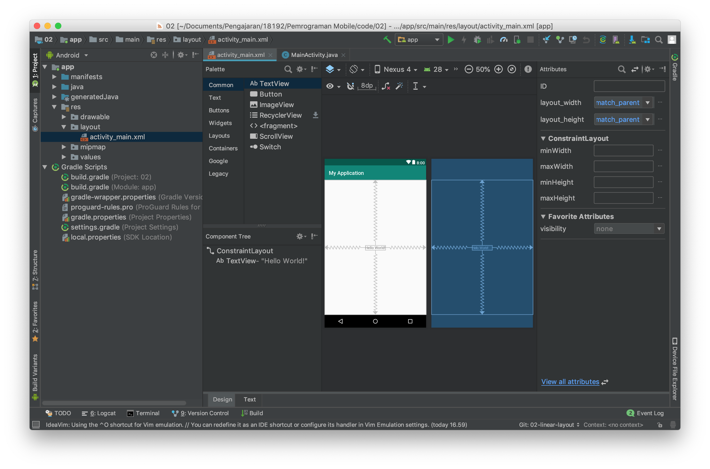
- Pada bagian jendela Component Tree, klik kanan pada ConstraintLayout.
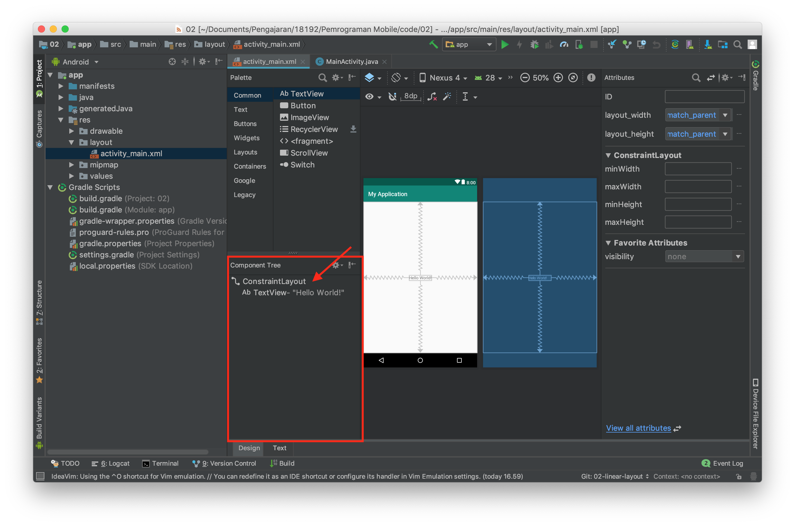
Kemudian lakukan konversi view dari constraint layout ke linear layout. 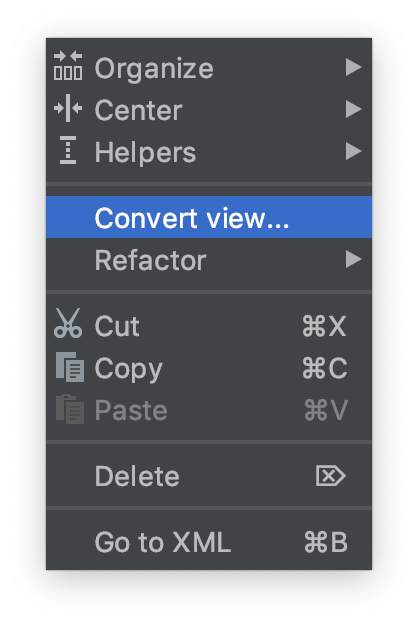
 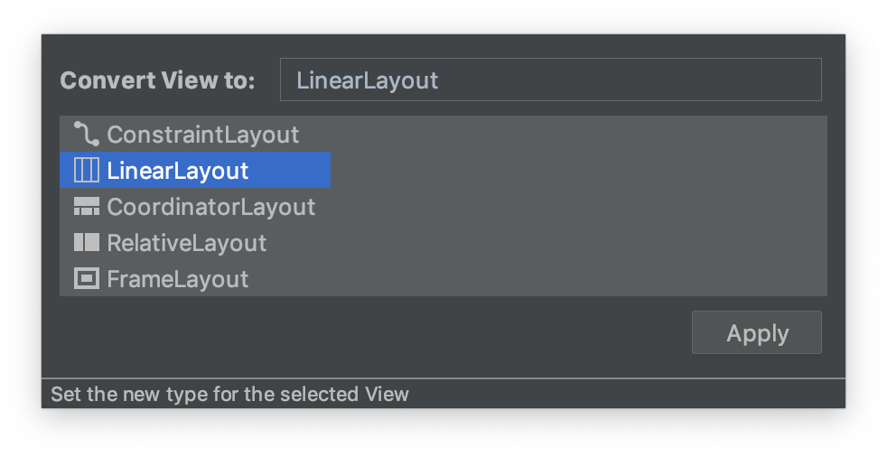
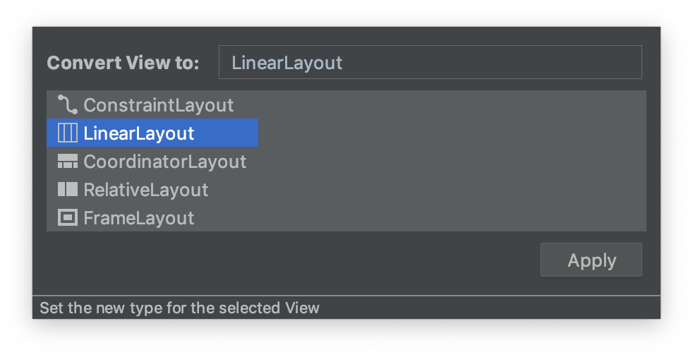Kemudian gantilah design mode ke text mode. 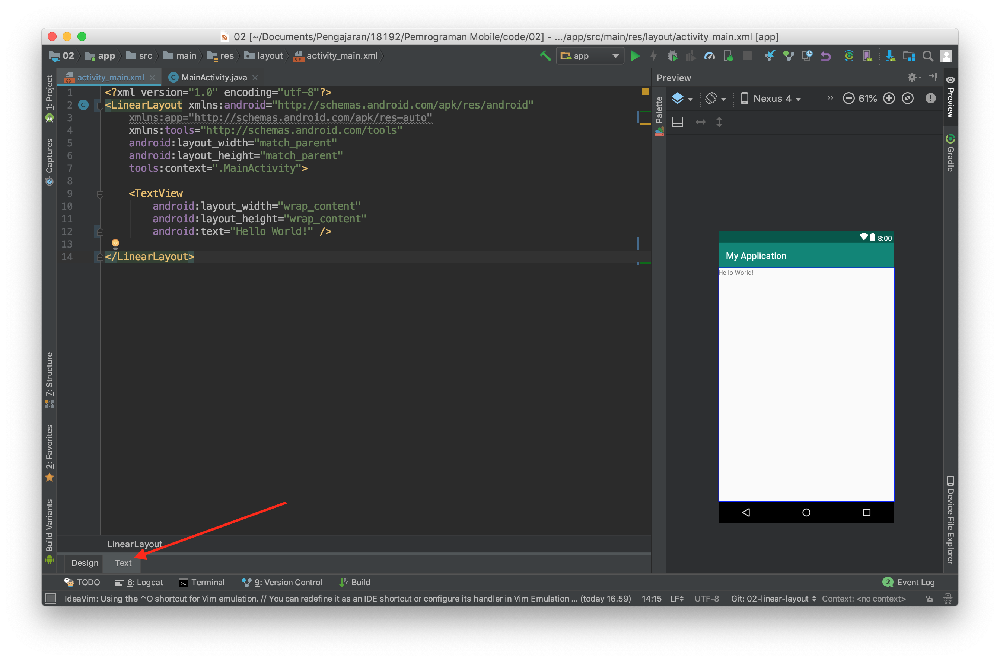
Tambahkan property
android:orientation="vertical"pada tagLinearLayout
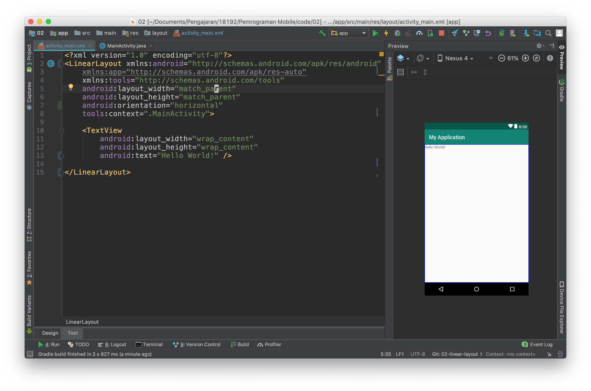
Anda baru saja menambahkan atribut baru pada tag xml. Ada banyak property lain yang perlu Anda ketahui. Silahkan melakukan eksplorasi untuk property atribut lain.
- Selanjutnya tambahkan property background pada linear layout seperti pada gambar dibawah ini sehingga layout Anda berubah background nya menjadi hijau.
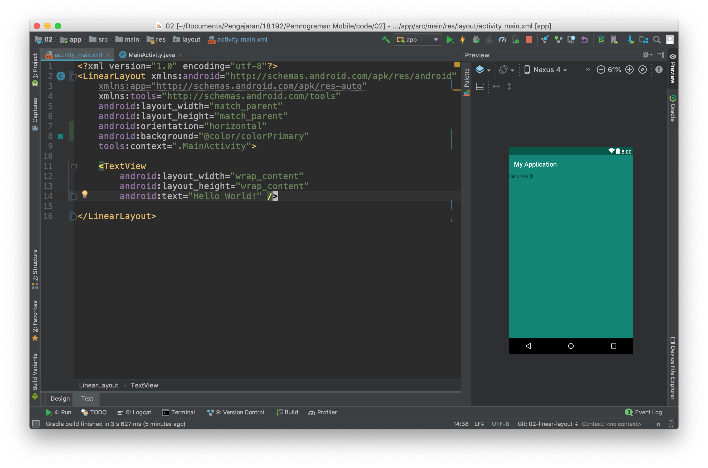
- Kemudian ubahlah nilai dari property
layout_heightmenjadi wrap_content
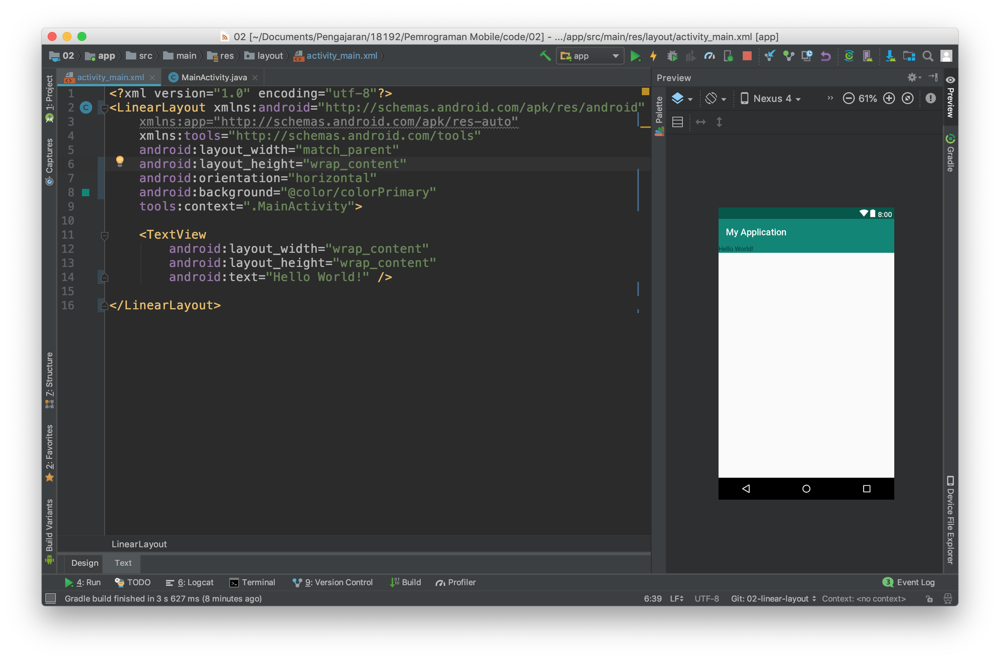
- Lakukanlah kompilasi, kemudian simpulkan apakah perbedaan antara
wrap_contentdanmatch_parent
Selain properties diatas linear layout mempunyai properties khusus yang hanya ada pada tipe layout ini, yaitu weigth_sum dan layout_weight
- weight_sum adalah bobot yang diberikan kepada
LinearLayoutbobot ini nantinya dapat digunakan untuk membagi ukuran yang dapat dimiliki oleh child dariLinearLayout. - layout_weight adalah bobot yang diberikan kepada child dari LinearLayout untuk menentukan ukuran dari child ini pada layar.
Untuk memahami penggunaannya lakukan langkah percobaaan berikut ini :
- Buka kembali project sebelumnya, kemudian kembalikan
layout_heightkematch_parent, hapus juga property background seperti pada gambar dibawah ini :
- Hapuslah tag xml
TextViewkemudian isilah LinearLayout dengan dua buah child lain yang juga sebuah LinearLayout. Hasilnya akan seperti pada gambar dibawah ini.
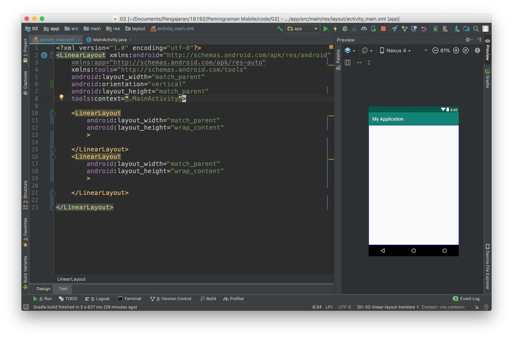
- Jika Anda perhatikan, belum terjadi perubahan apapun pada layout. Untuk itu lanjutkan dengan menambahkan property
background,weight_sum, danlayout_weightseperti pada gambar dibawah ini.
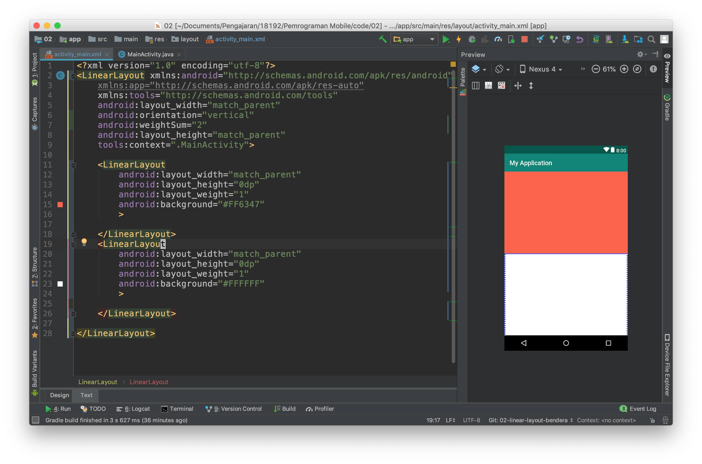
Kita dapat menggunakan
LinearLayoutsebagai child dariLinearLayoutatau layout lain proses ini dinamakan nested layout.
Berdasarkan percobaan di atas lakukanlah perubahan-perubahan sebagai berikut,
- ubah orientation menjadi horizontal
- ubah weight sum menjadi angka integer yang lain
- ubah layout_weight dari salah satu LinearLayout
Ambillah kesimpulan dari percobaan tersebut.
Commit semua perubahan yang telah anda lakukan, kemudian push ke akun GitHub anda!